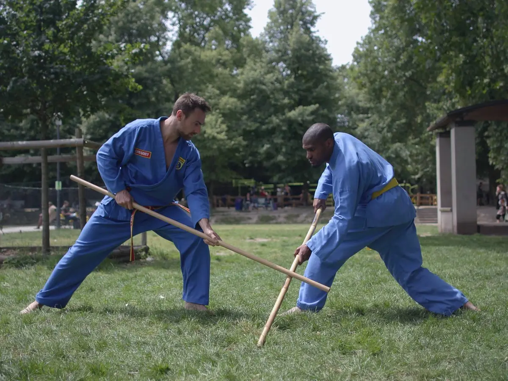
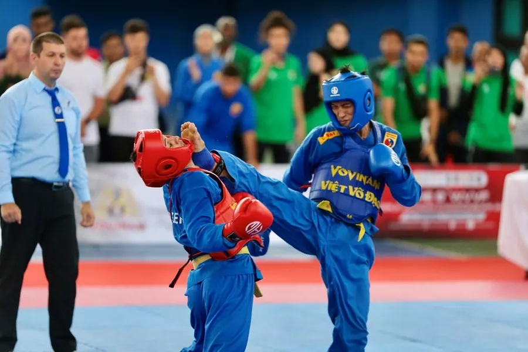
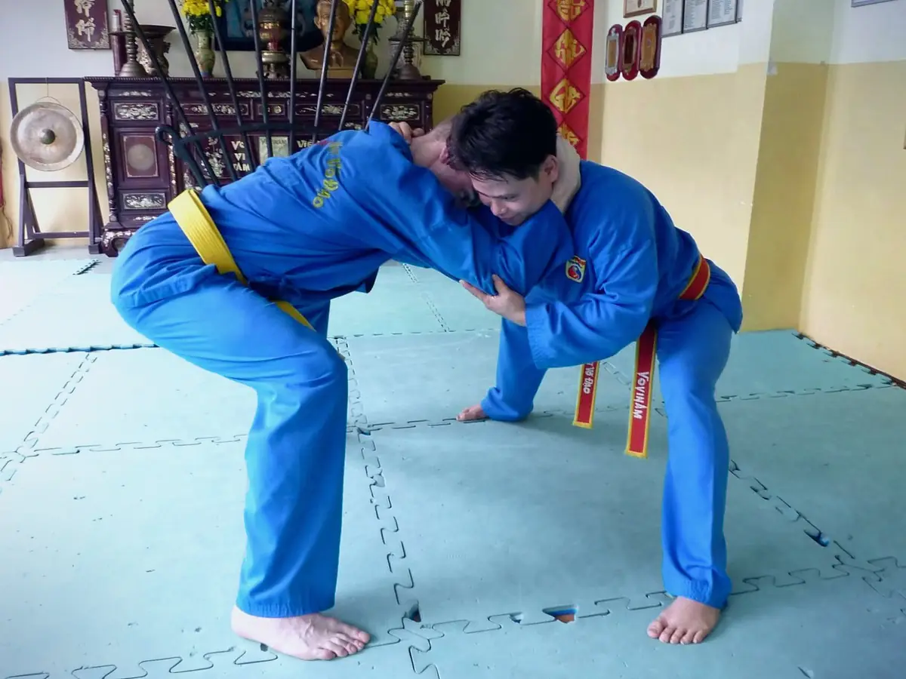

Techniques du Vovinam Việt Võ Đạo
Techniques de base, enchaînements codifiés, combat, lutte, renforcement, étirements, acrobaties et une philosophie. Le Vovinam Việt Võ Đạo forme le corps autant qu'il forge l'esprit, à travers des valeurs morales transmises dès les premiers cours.
Elles constituent le fondement technique de l’art.
Elles regroupent les frappes de poing (direct, crochet, javelot, montant), les tranchants de main, les coups de pied (direct, giflé, latéral, écrasé), les coups de coude et de genou, chacun décliné en plusieurs variantes numérotées.
À cela s’ajoutent de nombreuses positions, de la position centrale (Trung bình tấn) à la position du serpent (Xà tấn) ou de la grue (Hạc tấn).
Travaillées seul ou face à un partenaire, elles sont répétées méthodiquement jusqu’à l’automatisme.

Elles couvrent 3 domaines : mains nues, défense contre armes et maniement d'armes.
Self-défense, clés de bras, ciseaux, contre-attaques et lutte.
Le pratiquant apprend à se défendre contre un couteau, une hache, une machette ou un fusil baïonnette.
Épée, bâton, règle ou éventail.
Plus de 300 techniques au total, travaillées seul ou à deux jusqu'à la maîtrise complète.
Les formes seules (Đòn Luyện) : 12 formes à mains nues, 4 formes de souplesse et respiration et 12 formes aux armes.
Chaque enchaînement codifié permet de fixer les techniques en mémoire et de perfectionner ses mouvements.
Les formes à deux (Song Luyện) mettent ces mêmes techniques en situation réelle face à un partenaire : 4 enchaînements à mains nues, 3 sans chutes (Đối Luyện), 3 de lutte vietnamienne et 5 aux armes (dao, kiếm, côn, búa, mã tấu).
Le combat pied-poing se pratique en contact contrôlé (les frappes doivent être maîtrisées) et avec des protections :
Les techniques autorisées incluent coups de pied, coups de poing, balayages, projections et ciseaux, les coups de coude et de genou au corps étant réservés aux seniors.
À l'entraînement, paos, raquettes et pattes d'ours sont très utilisés en complément des assauts libres.


La lutte vietnamienne (Thế Vật) est une discipline à part entière, enracinée dans la tradition populaire vietnamienne.
Pour l'emporter, il faut projeter l'adversaire et lui faire toucher le dos au sol (dos à terre, ventre au ciel).
Au Vovinam, elle se pratique à travers des techniques codifiées de saisie, projection, clés et mise au sol. Travaillées d'abord en enchaînements progressifs, elles s'appliquent ensuite en situation libre.
La pratique du Vovinam exige un corps solide et mobile.
Chaque séance intègre du renforcement musculaire global et des assouplissements de tous les groupes musculaires (deux piliers indissociables pour exécuter les techniques avec puissance et précision).
Les chutes et roulades sont enseignées dès les premiers cours. Appréhender le sol et tomber sans se blesser sont des compétences fondamentales, autant que frapper ou esquiver.
Les projections et acrobaties complètent la préparation physique : sauts, sauts de mains... des mouvements qui demandent coordination, explosivité et engagement total. Ces éléments se construisent progressivement à l'entraînement, en fonction du niveau de chaque pratiquant.
Le corps se forme, l'esprit se forge.
« Être fort pour être utile »La devise du Vovinam Việt Võ Đạo
Le Võ Đạo (littéralement "la voie martiale") est la dimension philosophique du Vovinam. Ce n'est pas un simple code de conduite affiché sur un mur : c'est un enseignement transmis progressivement, grade après grade, tout au long du parcours du pratiquant.
On y aborde la conception des arts martiaux, les valeurs du pratiquant, les relations avec soi-même, la famille, l'école martiale et les autres.
Plus loin dans le parcours, le pratiquant explore la vision de l'être humain selon le Vovinam, la place des arts martiaux vietnamiens dans l'histoire mondiale, et l'idéal du "combattant humaniste" que le fondateur Nguyễn Lộc a voulu construire.
Le Võ Đạo ne s'apprend pas en un cours. Il se construit dans la durée, par la pratique, la réflexion et le respect des principes transmis par les maîtres qui ont précédé.
Venez tester sans engagement — tenue souple de sport et une bouteille d'eau suffisent, aucun équipement requis.